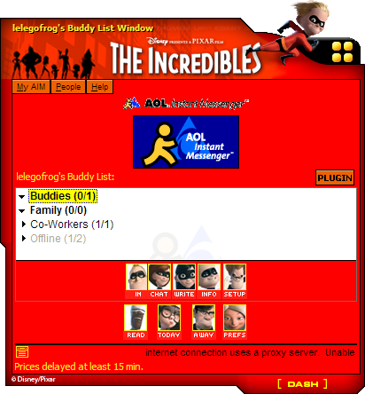

The Incredibles Extras

The Incredibles AIM Skin

Note 1: This skin requires  AIMutation (1.93 MB) to be installed
AIMutation (1.93 MB) to be installed
Note 2: Only tested with AIM 5.1
DOWNLOAD
.545 file (314 KB)
The Incredibles Bumper Stickers
Right click on the link of the size you want and click on the save/download image option to download it.
The Incredibles Screensaver

DOWNLOAD
.exe file zipped (Windows) (2.01 MB)
.sit file (Mac OS X) (1.76 MB)